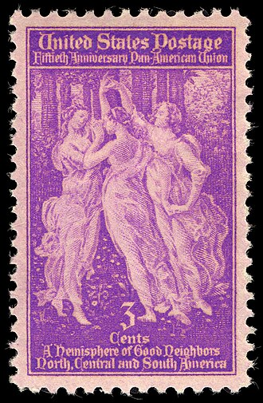
Sandro Botticelli — The Three Graces (from Primavera)
United States · 1940 · 3¢
The Three Graces, a detail from Botticelli’s Primavera (Spring), reproduced on the 1940 Pan-American Union commemorative stamp.Sixteen miniature works of art · 1940–1982
The United States Postal Service and its predecessor, the Post Office Department, have issued many beautifully produced stamps reproducing outstanding works of art. Their appeal is twofold: the pleasure of seeing great art in miniature and the opportunity to build a rewarding collection without necessarily seeking rare or costly issues.
This selection brings together sixteen stamps featuring American artists, European masters, Japanese art, and memorable Christmas issues. The stamps are presented in chronological order, with brief notes to help visitors appreciate their subjects. Their accessibility is one of the attractions of collecting art on stamps, although availability and prices naturally vary.

United States · 1940 · 3¢
The Three Graces, a detail from Botticelli’s Primavera (Spring), reproduced on the 1940 Pan-American Union commemorative stamp.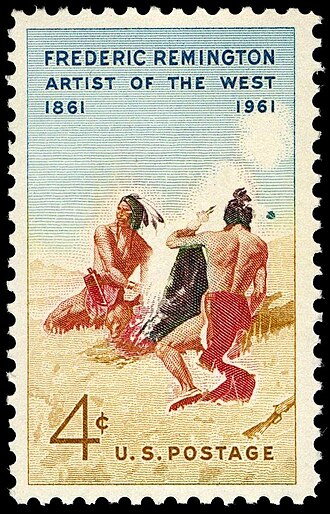
United States · 1961 · 4¢
A dramatic scene of the American West, issued for the centenary of the artist’s birth.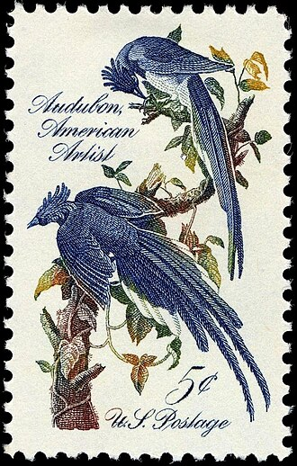
United States · 1963 · 5¢
Audubon’s detailed bird illustration, reproduced for the Audubon Society centenary.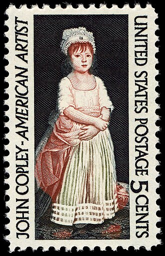
United States · 1965 · 5¢
An elegant eighteenth-century portrait, honoring American painting.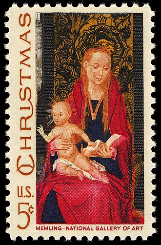
United States · 1967 · 5¢
A work by the Flemish painter Hans Memling, reproduced for the United States Christmas issue.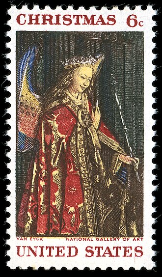
United States · 1968 · 6¢
A detail of an angel from Flemish painting, selected for a Christmas stamp.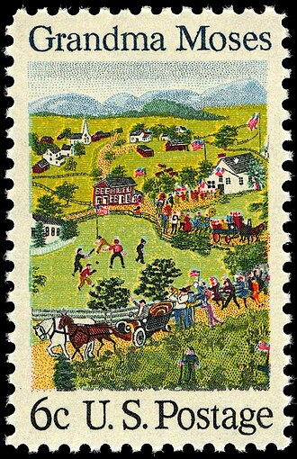
United States · 1969 · 6¢
A colorful rural landscape in the distinctive American folk-art tradition.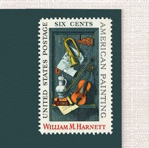
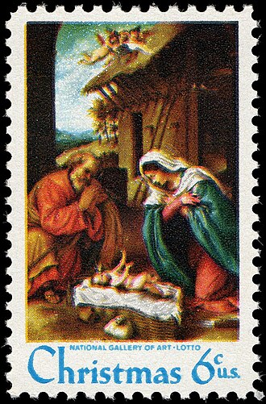
United States · 1970 · 6¢
An intimate Renaissance Nativity scene, featured in the Christmas series.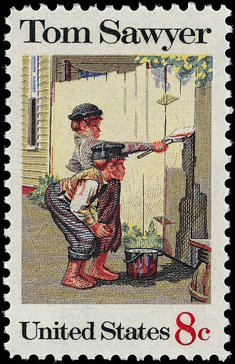
United States · 1972 · 8¢
An illustration inspired by Mark Twain’s famous character, showing the artistry of book illustration.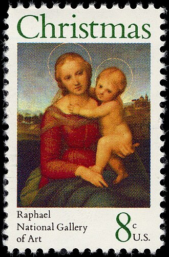
United States · 1973 · 8¢
A Renaissance Madonna and Child from the National Gallery of Art, Washington.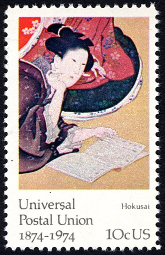
United States · 1974 · 10¢
Japanese art reproduced in a special issue celebrating 100 years of the Universal Postal Union.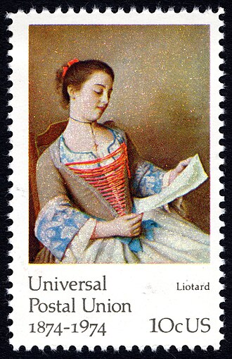
United States · 1974 · 10¢
A refined portrait representing European art in the UPU centenary series.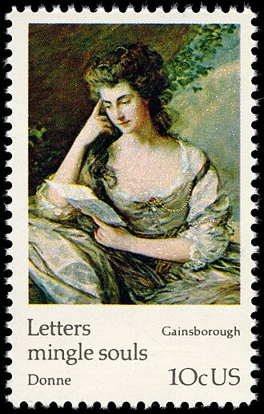
United States · 1974 · 10¢
A delicate portrait from British painting, completing this three-stamp selection.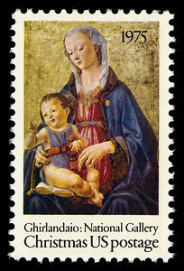
United States · 1975 · —
A Madonna and Child by the Italian Renaissance painter Domenico Ghirlandaio, reproduced for the 1975 Christmas issue; Scott 1579.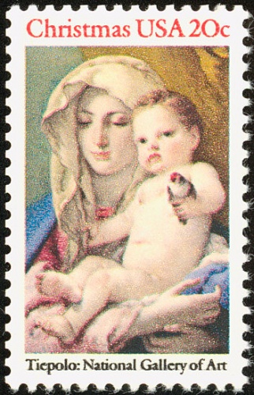
United States · 1982 · 20¢
A tender Madonna and Child painting reproduced in the Christmas series.These small printed images demonstrate how postage stamps can open a window onto museums, artistic traditions, and the history of visual culture. The selection is personal rather than exhaustive.